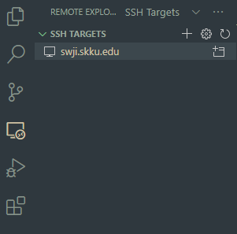

Saturday, October 16, 2021
인의예지를 이용한 기본적인 리눅스 사용해보기
인의예지를 이용한 기본적인 리눅스 사용해보기
인의예지란?
- 인의예지는 학교에서 제공하는 리눅스 클러스터 서버입니다.
- 인의예지에 대한 자세한 설명은 여기를 참고하세요!
인의예지에 접속해보기
-
가장 편한 방법은 역시 GUI죠! Windows 환경이시면 MobaXterm이 좋은 선택지가 될 거 같네요. 설명은 여기를 참고하세요!
-
GUI를 쓰기 어려운 환경이신가요? 그러면 다음 명령어로 접속을 해봅시다.
ssh -p 1398 (학번)@swji.skku.edu- ssh는 리눅스 클러스터 서버에 접속하기 위해 사용되는 인터넷 프로토콜이자 명령어입니다.
- -p 는 옵션으로 ssh 서버에 접속할 때 어느 포트에 접속할 것인지를 특정지어 줍니다.
- @ 왼쪽의 (학번)은 서버에 부여된 자신의 ID입니다. @ 없이 swji.skku.edu를 입력하신다면 현재 계정의 ID로 로그인을 시도합니다.
- @ 오른쪽의 swji.skku.edu는 접속하기 위한 Host/서버 정보를 의미합니다. IP 주소로 입력을 하실 수도 있고, URL 주소로 입력을 하셔도 됩니다.
- 정상적으로 접속이 됐다면 비밀번호를 입력하라는 창이 뜰 겁니다. 비밀번호를 입력해줍시다. 그러면 이제 리눅스 창이 뜰 겁니다.
-
VSCode로 접속이 가능한가요?
-
그럼요!
-
Remote-SSH 플러그인이 필요합니다. 설치해줍시다.
-
Ctrl+Shift+P를 눌러 옵션 창을 연 다음에 Remote-SSH: Add New SSH Host를 검색합시다.
-
명령어를 입력하는 창에 위의 명령어를 입력해봅시다. * 한글 사용자명을 가진 경우 문제가 있을 수 있다고 합니다. 혹시 확인되면 제보 바랍니다.
-
오른쪽 아래에 Host added!가 뜨면 왼쪽의 Remote 탭을 통해서 접속을 시도합시다.
 -
이제 swji.skku.edu 옆의 폴더 버튼을 눌러 접속을 시도해봅시다. 새로운 창이 뜨면서 비밀번호를 입력하는 창이 뜨면 정상입니다!
-
인의예지 서버에서 놀아보기
-
옆에 있는 표시는 어떤 표시인가요? => 처음 접속하면 (학번)@swji:~ 의 형태로 나오는데, 순서대로 (ID)@(Hostname):(현재 디렉토리 위치)를 의미합니다. 물결표(~)는 해당 계정의 홈 디렉토리에 있다는 것을 의미합니다. (Windows로 치면 C:\Users(계정이름)에 해당합니다.)
-
내가 어느 디렉토리에 있는지 확인하기: pwd
-
디렉토리를 생성하기: mkdir (생성할 디렉토리 이름)
-
디렉토리 내 파일들 확인하기: ls (혹은 ls -a를 통해 숨겨진 파일 모두 보기)
-
디렉토리의 위치를 이동해보기: cd (이동하고 싶은 디렉토리)
-
빈 파일 (empty file)을 생성하기: touch (파일 이름)
-
파일의 내용을 확인하기: cat (파일 이름)
-
디렉토리에서 간단하게 편집하기: vi (파일 이름) 혹은 nano (파일 이름)
-
어느 파일을 복사하기: cp (복사할 파일 이름) (복사 이후 파일 이름)
-
어느 파일 위치 이동하기/이름 바꾸기: mv (이동할 or 이름을 바꿀 파일 이름) (이동할 위치 or 바꿀 이름)
- 이 모든 테스트를 하나의 이미지로 정리하면 다음과 같이 됩니다.